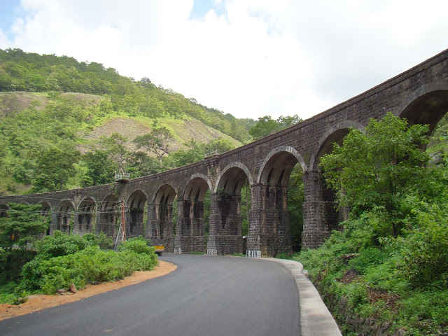
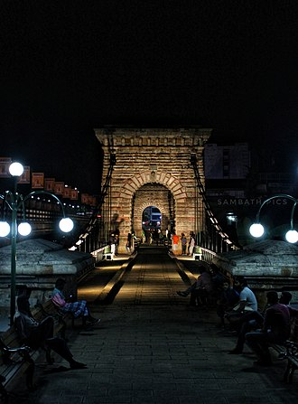

Kollam
Kollam is a city in the state of Kerala, on India's Malabar Coast. It’s known as a
trade hub and for its beaches, like lively Kollam and secluded Thirumullavaram. Sardar Vallabhbhai Patel
Police Museum has artifacts tracing the history of the police force. Nearby, Ashtamudi Lake is a gateway
to the Kerala backwaters, a network of waterways rich with vegetation. The striped 1902 Tangasseri
Lighthouse has ocean views.
Places to Visit in Kollam
- Jatayu-Earth-Centre.
- Lighthouse.
- Ashtamudi Lake.
- Thenmala.
- Punalur Suspension Bridge.
.jpg)
A huge rock at Chadayamangalam takes its name from the mythical bird `Jatayu in the epic Ramayana, who is believed to have collapsed on the rock after failing in his attempts to thwart Ravanas kidnapping of Sita. Recently the Jatayu Earth Centre, a rock theme park was opened here. This includes the world’s large bird sculpture of Jatayu, a museum and a multi dimensional theatre. Other than this they also offer activities like archery, rappelling, rock and ladder climbing and so on.

The Dutch Quilon as it was called, used to be a British Enclave. The place is also popular as Thangasseri. The lighthouse built at Quilon by the British in the year 1902 is visible as far as 13 miles in the sea. The lighthouse stands to an amazing height of 144 feet and is the second tallest lighthouse as well as one of the most visited lighthouses of Kerala. The picturesque view of the sea from the place where the lighthouse stands is breathtaking. In the vicinity lies the Portuguese Fort. The fort was built in the year 1517 and at present only a wall of the fort has escaped the assaults made by Time.

The serene Ashtamudi Lake is a great place to hanker for in the Kollam district. It is the most visited backwater and lake of Kerala. Ashtamudi means ‘Eight Coned’ in Malayalam. This lake or Kayal is lined with palm and coconut trees. The house boat trips here are great pleasures and so is the boat cruise. The boat cruise to Munroe Islands is a wonderful experience. The popular cruises one can avail at the place are Kayal Pradakshina Cruise and Sayanthanam Sunset Cruise.

The area is covered by dense forest, rubber and tea plantations. The name has the meaning of ‘Honey Mountain.’ An Eco Tourism Development Project is under implementation here. Thenmala is also a dam site with the Parappar Dam. So as to attract tourists Thenmala has many activities and attractions like boating, rope bridge, trekking, mountaineering, biking, musical fountain and so on.he other attraction of Thenmala is the Deer Park. At the deer park one can find many deers as well as trees. Here there are three types of deers namely the Sambar Deer, the Spotted Deer and the Lawn Deer. This park also has tree top huts which has two rooms. There is also a recreational area and a children’s park.

The Punalur Suspension Bridge is the first motorable bridge in South India. The suspension bridge crossing the river is the only suspended-deck type in south India. Built in 1877 by Albert Henry across the Kallada River, this huge bridge was suspended by two spans and was used for vehicular movement. Construction took more than six years. It is said that after completion of the bridge people hesitated to walk over the bridge. In order to prove the strength of the bridge the engineer and his family passed under the bridge in a country boat while six elephants were walking over it. Now the bridge is of historical interest and is a major tourist attraction.